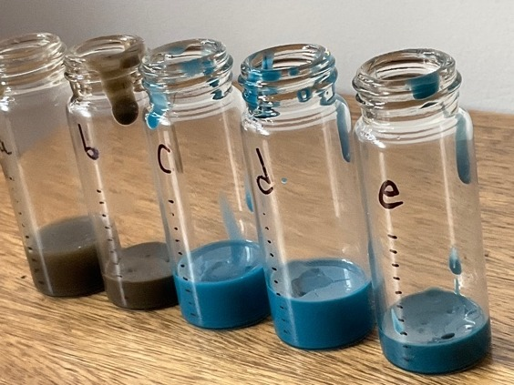
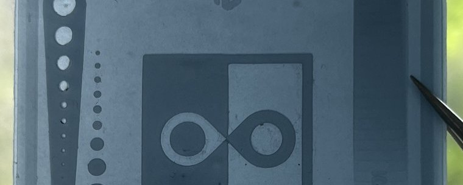

Baja · mock-up
Sustitutos en frascos
Cemento y esmalte en resina. 20 y 33 wt% no curaron por dentro; 7 wt% sí.
Evaluación 3 (Cabezas y López S., 2026b)
MAGÍSTER EN CIENCIAS DEL DISEÑO · UAI · RESUMEN DE TESIS
Tesis proyectual híbrida: remanente de lapislázuli en manufactura aditiva (SLA/FDM) y pensamiento crítico sobre el cuidado del Estado.
Cabezas, F. · López S., V.
Resumen de avance para nueva comisión
GRAN DESAFÍO
No es un problema de tecnología ni de manufactura. Es un problema de continuidad cultural, viabilidad económica y oportunidad territorial.
PROPÓSITO DE LA TESIS
Contribuir a un futuro más resiliente para el sector artesanal del lapislázuli en Chile, fortaleciendo su continuidad cultural y sus oportunidades de desarrollo ante la creciente dificultad de acceder a materia prima y la pérdida de valor de los recursos disponibles.
Versión breve, para presentación
Preservar el valor cultural, social y económico del lapislázuli para las futuras generaciones.
QUÉ ES ESTA TESIS
¿Qué relación existe entre la factibilidad de fabricar, mediante SLA y FDM, un compuesto de remanente de lapislázuli chileno, y las posibilidades de diseño que esa factibilidad habilita dentro de los márgenes normativos patrimoniales, ambientales y de clasificación de proyectos?
Valeska López
Matriz de requisitos, exclusiones y categorías de aplicación de diseño. Naturaleza cualitativa, normativa.
Fernanda Cabezas
Caracterización y formulación material del biocompuesto. Naturaleza cuantitativa, experimental.
Punto de amarre: Valeska entrega el marco normativo y patrimonial, y Fernanda, como diseñadora, ejecuta el objeto final con ese brief y su material ya validado. Ninguna rama puede cerrar la fase final sola (Cabezas & López S., 2026a).
DE DÓNDE SALE EL PROYECTO
Problema raíz compartido
El lapislázuli es Piedra Nacional de Chile desde 1984, pero el Estado no lo sostiene: sin fiscalización desde 2009, sin fomento dedicado, sin marco normativo que lo proteja.
Problema específico · Valeska
Ausencia de marco normativo y de fiscalización real: el patrimonio se declara por decreto, pero nadie lo clasifica ni lo sostiene.
Problema específico · Fernanda
Lapislázuli desvalorizado, artesanos en autogestión total: sin Fondart, Corfo ni ANID dedicado.
Síntesis que articula ambas lecturas
Reactivar el remanente patrimonial del lapislázuli como estrategia de cuidado de un oficio y un recurso en riesgo.
PENSAMIENTO CRÍTICO · SOSTENIBILIDAD ECONÓMICA, SOCIAL Y PATRIMONIAL
Estatus patrimonial sin protección real
Piedra Nacional desde 1984 (Decreto 62): declaración honorífica, sin régimen de protección. El Código de Minería permite extraerla sin candado legal específico.
Doble ausencia confirmada
SERNAGEOMIN no fiscaliza la producción desde 2009. Sin Fondart, Corfo ni ANID dedicado — a diferencia del litio o el cobre, con líneas estatales activas de investigación.
Consecuencia documentada
La única mina legal (Flor de los Andes) está paralizada desde 2023. El mercado se abastece de extracción informal: muertes por explosiones (2014) y decomisos de Carabineros (2018).
Entrega: matriz de requisitos, exclusiones y categorías de aplicación de diseño — traduce este argumento normativo en el brief que Fernanda usa para el objeto final.
"Abandono estatal" es la tesis crítica de esta rama, sostenida por los datos de arriba y sus fuentes — no una categoría jurídica formal (corrección de V. López, 2026).
CULTURA MATERIAL
Hipótesis proyectual
Demostrar qué otros usos, a partir del remanente, hacen más vivo el material.
Confirmado
Sin Fondart, Corfo ni ANID dedicado al lapislázuli. Artesanos en autogestión, sin apoyo directo.
Tensión clave
Paradoja de la escala: extractivismo frente a ética circular. Se resuelve trabajando con el remanente, no con extracción directa.
Colaboración con artesanos
Economía circular, sin extractivismo.
Otros usos: lazurita
Documentados y por explorar.
Percepción de la piedra
Vacío social y académico: souvenir, no identidad, sin estudios previos.
DÓNDE SE ENCUENTRAN LAS DOS RAMAS
Marco teórico compartido
Performatividad como agencia (Butler, Barad, Latour, Bennett): el material no representa patrimonio, actúa.
Vacío compartido
Certificación NCh/DOM y normativa de patrimonios, aún sin resolver en ninguna de las dos ramas.
Síntesis
Dignidad institucional: materia activa + argumento de política pública.

Baja · mock-up
Cemento y esmalte en resina. 20 y 33 wt% no curaron por dentro; 7 wt% sí.
Evaluación 3 (Cabezas y López S., 2026b)

Mediana · modelo sensorial
Polvo A sin tamizar en resina SLA, tres cargas. Se observan color, translucidez, detalle y rigidez.
Alta · funcional
Granulometrías determinadas y lazurita extraída para hacer subcargas de color dentro del material compuesto.
Baja respondió
El umbral de curado está entre 7 y 20 wt%
Mediana responde
Cura con lapislázuli real, hasta 25% nominal
Alta responderá
¿Con qué granulometría y qué color?


No se siente piedra: se siente resina con pigmento. Más carga, más azul, más rígido.
Observación directa, sin instrumentos de color, transmitancia ni fuerza. Carga real calculada con los gramos pesados; el umbral de curado depende del espesor de capa, no es una constante del polvo.
FACTIBILIDAD Y PRÓXIMOS PASOS
Próximos 30 días
Riesgos y bloqueos principales
Appadurai, A. (Ed.). (1986). The social life of things: Commodities in cultural perspective. Cambridge University Press.
Bennett, J. (2010). Vibrant matter: A political ecology of things. Duke University Press.
Cabezas, F., & López S., V. (2026a). Inteligencia material del lapislázuli chileno [Informe del Taller de Investigación Proyectual]. Magíster en Ciencias del Diseño, Universidad Adolfo Ibáñez.
Cabezas, F., & López S., V. (2026b). LAZULform. Evaluación 3: Prototipado aplicado y estrategias sostenibles [Informe de Inteligencia Material]. Magíster en Ciencias del Diseño, Universidad Adolfo Ibáñez.
Khan, I., Kumar, N., Yadav, J. S., Choudhary, M., Chauhan, A., & Singh, T. (2023). Utilization of waste slate powder in poly(lactic acid) based composite for 3D printer filament. Journal of Materials Research and Technology, 24, 703-714. https://doi.org/10.1016/j.jmrt.2023.03.046
Rosas, J., & Pazols, M. (2026). Prototipado en procesos de diseño [Diapositivas de clase]. Taller de Prototipos, Magíster en Ciencias del Diseño, Universidad Adolfo Ibáñez.
Smith, L. (2006). Uses of heritage. Routledge.
Vastamäki, T. (2019). Stereolithography ceramic 3D-printing [Tesis de maestría, Tampere University].
Wensveen, S., & Matthews, B. (2015). Prototypes and prototyping in design research. En P. A. Rodgers & J. Yee (Eds.), The Routledge companion to design research (pp. 262-276). Routledge. (Citado en Rosas y Pazols, 2026.)
Resumen construido a partir de la bóveda de investigación de la tesis (wiki de Obsidian). Detalle completo, imágenes y bitácora de probetas en la bóveda compartida.